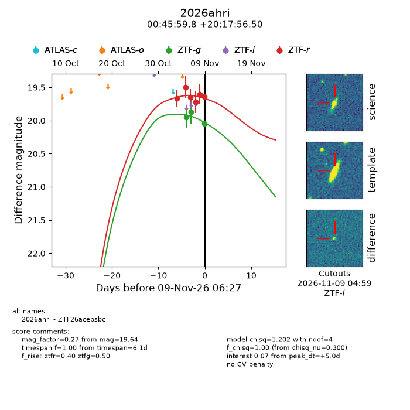
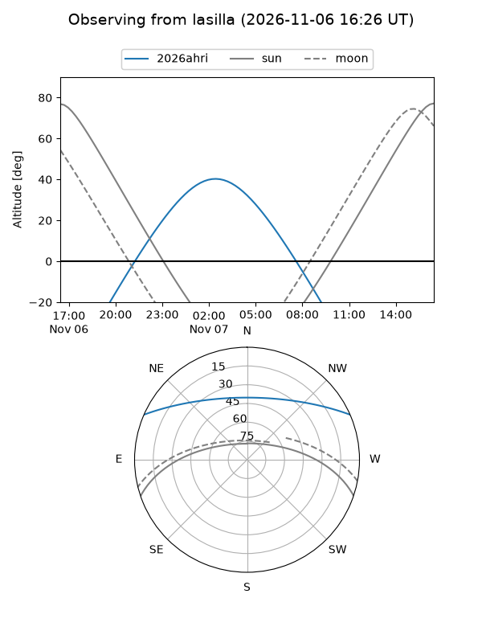
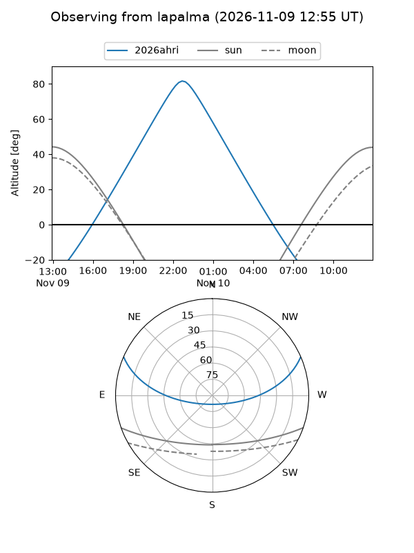
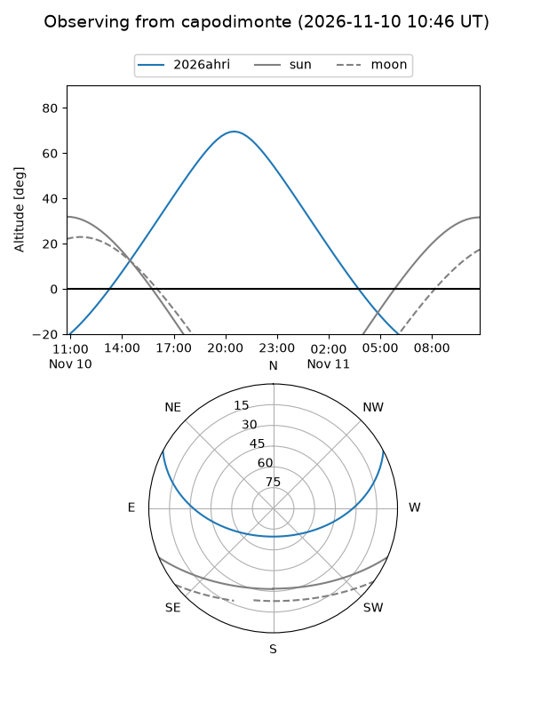
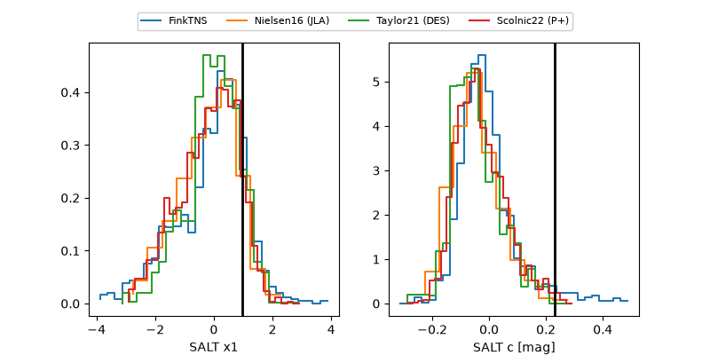

2026ahri
Target 2026ahri at 2026-11-09 06:30
Aliases and brokers:
FINK-ZTF: ztf.fink-portal.org/ZTF26acebsbc
Lasair-ZTF: lasair-ztf.lsst.ac.uk/objects/ZTF26acebsbc
ALeRCE-ZTF: alerce.online/object/ZTF26acebsbc
YSE-PZ: ziggy.ucolick.org/yse/transient_detail/2026ahri
TNS name: wis-tns.org/object/2026ahri
Direct TNS query: direct search
alt names
ZTF26acebsbc (ztf,fink_ztf)
2026ahri (tns,yse)
Coordinates:
equatorial (ra, dec) = 11.4990,+20.29903
equatorial (HMS+DMS) = 00:45:59.76,+20:17:56.50
galactic (l, b) = (121.1997,-42.55442)
Flags:
peak dt: +5.0
Photometry:
last ztfg=20.04, ztfr=19.64
3 ztfg, 6 ztfr detections
Lightcurve

Visibility



Additional plots
